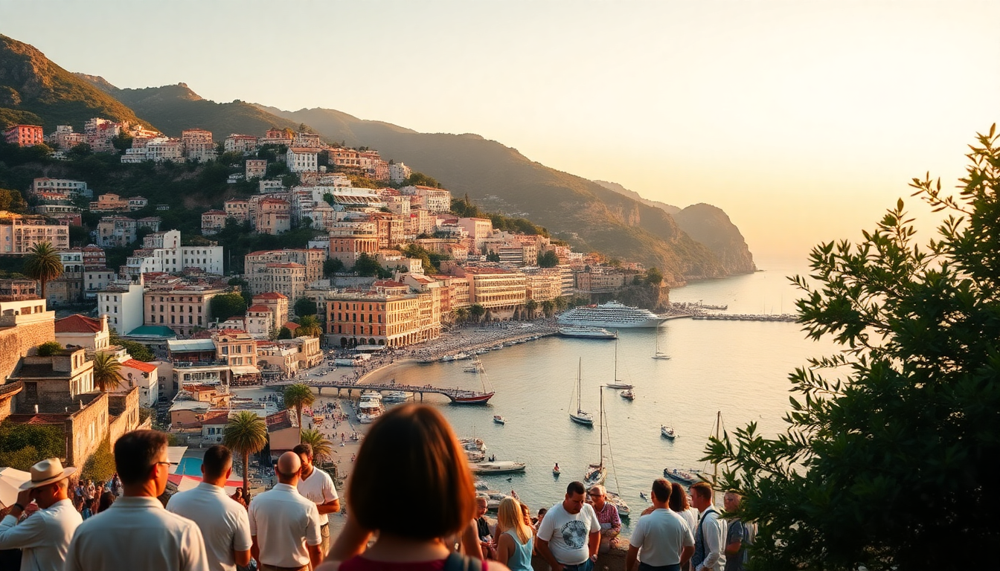

Best Time to Visit the Amalfi Coast: A Seasonal Guide

I’ve driven the SS163 Amalfitana road three times now—once in August, once in October, and once in early May—and each trip felt like a completely different destination. The coast changes wildly with the season, and picking the wrong month can mean hours stuck in traffic or missing the best swimming weather entirely. Here’s what I’ve learned about when to actually go.
When is the best weather on the Amalfi Coast?
For swimming and sunbathing, July and August give you reliably hot, dry days with sea temperatures hitting 26°C (79°F). But “best weather” comes with a trade-off. I found June to be the sweet spot: the water is already warm enough for a dip at Marina Grande in Positano, the days are long, and the heat hasn’t reached the sticky, air-conditioner-or-die level of August.
- June and September — Warm water, fewer tourists than peak summer, and still enough sun to burn if you forget sunscreen.
- July and August — Guaranteed beach weather, but you’ll be shoulder-to-shoulder on the pebbles at Spiaggia di Atrani.
- May and October — Risky for swimming (water around 18-20°C), but perfect for hiking the Path of the Gods or exploring Ravello’s Villa Cimbrone gardens without sweating through your shirt.
When are the crowds the worst?
Late July through August is chaos. I once spent 45 minutes in a traffic jam just to get past the tunnel near Amalfi’s Piazza Duomo. The ferries from Salerno and Sorrento are packed, and you’ll queue 20 minutes for a lemon granita at Pasticceria Pansa in Amalfi. If you hate crowds, avoid these weeks entirely.
- August 15 (Ferragosto) — Everything is overbooked. Hotels in Positano charge peak rates, and the beach at Spiaggia di Fornillo feels like a sardine tin.
- Easter week — Second-busiest period. Processions in Ravello are beautiful, but restaurants like Trattoria Cumpa’ Cosimo require reservations weeks ahead.
- October through March — Quietest months. Many hotels and some restaurants close for the season (Ravello’s Villa Maria shuts down mid-October). You’ll have the Duomo di Amalfi almost to yourself.
What about shoulder season—is it worth it?
Yes, if you prioritize comfort over swimming. I went in mid-October last year and loved it. The weather was still 22°C during the day, the crowds had thinned, and I booked a room at Hotel Santa Caterina in Amalfi for 40% less than July rates. The catch: some ferry schedules shrink, and you’ll need to rely on SITA buses or rental cars more.
- Late April to early June — Best balance. Wildflowers are out in Ravello, the lemon trees in Amalfi’s Valle dei Mulini are heavy with fruit, and the bus from Sorrento to Positano runs frequently but isn’t packed.
- Late September to mid-October — Same deal but in reverse. The water is still swimmable in early October, and the light for photos along the Via Krupp path is spectacular.
- November to March — Many places are closed. You’ll save money, but expect rain, cold winds, and limited dining options. Not ideal for a first visit.
Is winter a total bust?
Not if you’re flexible. I spent a weekend in Ravello in December and it was eerily quiet—the kind of silence you don’t get in summer. The views from Villa Rufolo over the Tyrrhenian Sea were still stunning, and I had the terrace almost to myself. But you need to plan carefully.
- What stays open — A handful of hotels like Palazzo Avino in Ravello and a few bars in Amalfi’s center. The Duomo di Amalfi and the Chiostro del Paradiso are open year-round.
- What closes — Most beach clubs (like Lido degli Artisti in Positano), many ferries, and nearly all of the coastal path from Amalfi to Atrani.
- Transport — SITA buses run on reduced schedules. Renting a car is doable, but the SS163 road can get slick with rain. I’d stick to taxis or private drivers if you’re nervous.
How do prices change month to month?
Hotels in Positano follow a brutal curve. I’ve seen a standard double at Le Sirenuse hit €800 a night in August and drop to €350 in November. The same pattern applies to tours, boat rentals, and even limoncello tastings at the Antichi Sapori shop in Amalfi.
- June to September — Peak pricing. Book three months ahead for anything decent.
- April, May, October — Moderate. You’ll pay 20-30% less than summer, but still need reservations for popular spots like Da Adolfo in Positano.
- November to March — Lowest rates. Some hotels offer 50% off, but you’re gambling on weather. I’d only do this if you’re okay with rain and closed restaurants.
What’s the best month for hiking and outdoor activities?
Spring and fall are the clear winners. The Path of the Gods (Sentiero degli Dei) from Bomerano to Nocelle is brutal in July heat—I saw a woman nearly faint near the top. In May, the trail is lined with wild mint and the air is cool.
- May and early June — Perfect for the Valle delle Ferriere hike near Amalfi. The waterfalls are full from spring melt, and the shade from chestnut trees keeps it bearable.
- September — Good for the Ravello to Scala walk. The views over the coast are clear, and the sea breeze hits right.
- Avoid July and August — Even the short walk from Positano to the Spiaggia di Fornillo feels like a sweat lodge. Stick to morning hours.
FAQ
Is the Amalfi Coast worth visiting in August? Only if you have no other choice. The crowds are overwhelming, prices are at their highest, and the traffic on the SS163 can ruin a day trip. If you do go, book everything—ferries, restaurants, a spot on the beach—well in advance. I’d pick June or September over August every time.
Can you swim on the Amalfi Coast in October? Yes, but it’s chilly. The sea temperature drops to around 21°C by early October, which is fine for a quick dip but not for lounging. By late October, most beach clubs are closed, so you’ll need to find public access points like the free beach at Marina di Praia.
What’s the cheapest month to visit the Amalfi Coast? January or February. You’ll pay half the summer rate for a room at Hotel Miramare in Positano, and flights to Naples are cheap. The catch: many restaurants and shops are closed, and the weather is cold and damp. It’s a good option if you want solitude and don’t care about swimming.
Conclusion
- Go in June or September for the best mix of warm weather, manageable crowds, and open restaurants.
- Avoid August and Easter week unless you enjoy queuing for everything and paying double.
- Spring (April-May) and fall (October) work well if you’re okay with cooler water and some closures.
- Winter is for budget travelers and solitude seekers—just check what’s open before you book.
- Book ferry and bus tickets in advance during shoulder season; schedules thin out fast after September.